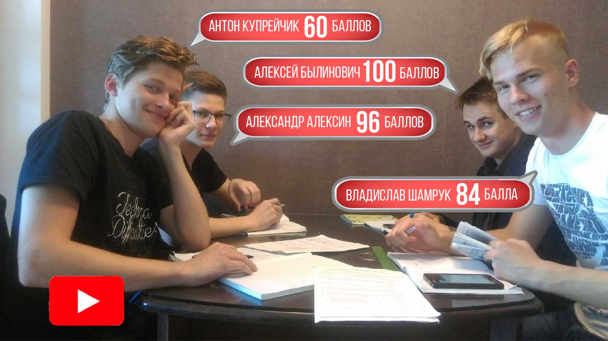
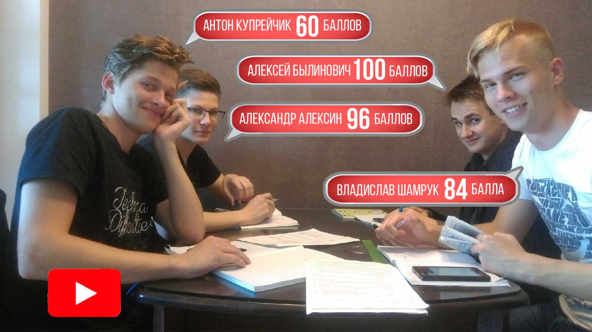

Занятия проводит кандидат физико-математических наук с опытом работы более 20 лет.
Мной подготовлены победители и призеры математических олимпиад различного уровня
(свыше 20 учеников), абитуриенты, набравшие на ЦТ по математике 100 баллов
(более 10 учеников).
Подробная информация о репетиторе
>>
 

Основные направления деятельности:
Подготовка к ЦТ по математике. Более 400 абитуриентов
с моей помощью поступили в различные вузы Беларуси, дальнего и ближнего зарубежья. Создана электронная база,
включающая в себя все варианты централизованных и репетиционных тестирований всех лет и авторские наработки
с возможностью любой выборки, будь то тема, уровень сложности, год, всевозможные другие критерии и их пересечения.
Также мной осуществляется подготовка к ЕГЭ по математике.
Подробная информация о подготовке к ЦТ
>>
Репетитор по высшей математике.
Более 350 студентов
подготовлено мной к экзаменам по высшей математике
и другим математическим дисциплинам.
Все студенты, занимавшиеся на постоянной основе и выполнявшие домашнее задание, сдали экзамен с первого раза.
Далеко не все студенты могут самостоятельно освоить разделы высшей математики. Зачастую студенты первого курса
не понимают грань, которая разделяет школу и вуз. Скорее всего, материал более не будет «разжевываться»,
большое количество времени будет отведено на самостоятельную работу. Никто не будет «тянуть за уши»,
ведь высшее образование не является обязательным
 Пересдача и отчисление – это новые неприятные, но, тем не менее, реальные вещи. Не стоит до этого доводить.
Подробная информация о репетиторе по высшей математике
>>
Пересдача и отчисление – это новые неприятные, но, тем не менее, реальные вещи. Не стоит до этого доводить.
Подробная информация о репетиторе по высшей математике
>>
Пересдача и отчисление – это новые неприятные, но, тем не менее, реальные вещи. Не стоит до этого доводить.
Подробная информация о репетиторе по высшей математике
>>
Репетитор по математике для школьников.
Провожу занятия со школьниками 4, 5, 6, 7, 8, 9, 10 и 11 класса с любым уровнем подготовки.
Считаю основным создание у ученика
фундаментальной математической базы,
соответствующей его классу, уровню,
математическим способностям и дальнейшего ее развития. Учу находить взаимосвязь между различными главами
и разделами математики. Постоянно держу на контроле новые темы, зачастую работаю на опережение.
При этом считаю чрезвычайно важным добиться у ученика знания предмета в полном объеме, а не в рамках последних тем.
Всегда выхожу за программу учебника и даю понимание предмета на более глубоком уровне. При этом обязательно учитываются
способности учащегося. Как следствие из вышесказанного, происходит повышение успеваемости.
Отдельно выделю следующие направления:
-подготовка по математике для поступления в лицей, колледж, гимназию после 9-го класса;
-подготовка к ОГЭ по математике;
-подготовка к математическим олимпиадам;
-решение нестандартных и логических задач.
Подробная информация о репетиторе по математике для школьников >>
-подготовка по математике для поступления в лицей, колледж, гимназию после 9-го класса;
-подготовка к ОГЭ по математике;
-подготовка к математическим олимпиадам;
-решение нестандартных и логических задач.
Подробная информация о репетиторе по математике для школьников >>
Репетитор по математике для взрослых.
В последние годы обозначилась тенденция, когда взрослые, зачастую уже состоявшиеся в своей
профессии люди, осознают, что недостаточная математическая база является стопором в дальнейшем развитии и совершенствовании
в выбранной специальности. Нередко требуется
репетитор по алгебре и геометрии
для восстановления основ школьной программы,
необходима подготовка по основным главам высшей математики,
теории вероятностей,
дальнейший выход на специальные дисциплины.
Подробная информация о репетиторе по математике для взрослых
>>
Онлайн репетитор по математике.
Репетитор по Skype (репетитор по скайпу)
для школьников, абитуриентов, студентов и взрослых. Отмечу, что данный вид репетиторства
математики на постоянной основе больше подходит для учеников, имеющих определенные навыки и математические
способности. Также оказывается экстренная помощь:
репетитор по математике онлайн.
Подробная информация о репетиторе онлайн по математике
>>
Преимущества:
Профессионализм
Как правило, подавляющее большинство репетиторов считают себя профессионалами, поэтому выделю некоторые особенности:


Сочетание различных подходов,технологий и экспромта
Не буду рассказывать о некой
уникальной методике, которая
всем подходит, ее просто не
существует. В умелом выборе процесса
обучения в зависимости от ученика
и постоянной импровизации, на
мой взгляд, лежит ключ к
хорошему результату.

Кабинет для занятий
Просторная светлая комната
специально проектировалась
для занятий. В ней не будет
поднадоевшей парты, мела и доски,
но создана непринужденная
рабочая атмосфера, и есть все
необходимое для занятий.
Фото кабинета
Фото кабинета
Многофункциональность
Я не беру для себя только
лакомые куски. Например,
не занимаюсь исключительно
натаскиванием на ЦТ . Вы можете
получить помощь по математике
в освоении школьной программы
для любого класса, в олимпиадном
движении, при подготовке к ЦТ,
дальнейшей учебе в вузе.

Опыт
Я занимаюсь репетиторством
по математике с 1996 года, не
считая студенческой практики.
И каждый год приходит понимание
того, что определенные моменты
следует изменить, аккуратно
модернизировать процесс и
программу обучения, добавить
некоторые новые детали, при
этом ничего не сломав. Постоянное
развитие, накопленные в
течение длительного периода
навыки и грамотное их применение
для меня являются основными
составляющими опыта в профессии.
Подробнее о репетиторе
Подробнее о репетиторе
Математика, русский и белорусский языки в одной семье
Моя жена – репетитор по русскому
языку и Вы можете посещать занятия
по русскому или белорусскому
языкам здесь же.
Подробнее о репетиторе по русскому языку
Подробнее о репетиторе по русскому языку
Организация занятий
Подготовка по математике
возможна индивидуально, в
парах и мини-группах от трех
до пяти человек. При этом очень
ответственно подхожу к набору
учащихся.Ученики разного уровня
не занимаются вместе, количество
учеников в мини-группе строго
ограничено, учитывается и
психологическая совместимость.
Я - за качество преподавания,
а Вы получаете максимум
знаний за отведенное время.
Прямое общение с преподавателем
Работа ведется на законных
основаниях с уплатой единого
налога без посредников,
организаторов и прочих лиц, чья
основная цель – извлечение
прибыли. Здесь Вы не найдете
«опытных профессионалов» с
опытом работы от 0 лет и
уникальными авторскими
методиками
,
не затеряетесь в
большой группе учеников с
самыми разными способностями
и не прочтете вымышленных отзывов.
,
не затеряетесь в
большой группе учеников с
самыми разными способностями
и не прочтете вымышленных отзывов.
Местоположение
Занятия проходят в шаговой доступности от станции метро «Малиновка».
Подробнее о местоположении
Подробнее о местоположении
Профессионализм
Как правило, подавляющее большинство репетиторов считают себя профессионалами, поэтому выделю некоторые особенности:
Как правило, подавляющее большинство репетиторов считают себя профессионалами, поэтому выделю некоторые особенности:
Сочетание различных подходов, технологий и экспромта
Не буду рассказывать о некой уникальной методике, которая всем подходит, ее просто не существует. В умелом выборе процесса обучения в зависимости от ученика и постоянной импровизации, на мой взгляд, лежит ключ к хорошему результату.
Не буду рассказывать о некой уникальной методике, которая всем подходит, ее просто не существует. В умелом выборе процесса обучения в зависимости от ученика и постоянной импровизации, на мой взгляд, лежит ключ к хорошему результату.
Многофункциональность
Я не беру для себя только лакомые куски. Например, не занимаюсь исключительно натаскиванием на ЦТ. Вы можете получить помощь по математике в освоении школьной программы для любого класса, в олимпиадном движении, при подготовке к ЦТ, дальнейшей учебе в вузе.
Я не беру для себя только лакомые куски. Например, не занимаюсь исключительно натаскиванием на ЦТ. Вы можете получить помощь по математике в освоении школьной программы для любого класса, в олимпиадном движении, при подготовке к ЦТ, дальнейшей учебе в вузе.
Опыт
Я занимаюсь репетиторством по математике с 1996 года, не считая студенческой практики. И каждый год приходит понимание того, что определенные моменты следует изменить, аккуратно модернизировать процесс и программу обучения, добавить некоторые новые детали, при этом ничего не сломав. Постоянное развитие, накопленные в течение длительного периода навыки и грамотное их применение для меня являются основными составляющими опыта в профессии. Подробнее о репетиторе
Я занимаюсь репетиторством по математике с 1996 года, не считая студенческой практики. И каждый год приходит понимание того, что определенные моменты следует изменить, аккуратно модернизировать процесс и программу обучения, добавить некоторые новые детали, при этом ничего не сломав. Постоянное развитие, накопленные в течение длительного периода навыки и грамотное их применение для меня являются основными составляющими опыта в профессии. Подробнее о репетиторе
Математика, русский и белорусский языки в одной семье
Моя жена – репетитор по русскому языку. Вы можете посещать занятия по русскому или белорусскому языкам здесь же. Подробнее о репетиторе по русскому языку
Моя жена – репетитор по русскому языку. Вы можете посещать занятия по русскому или белорусскому языкам здесь же. Подробнее о репетиторе по русскому языку
Организация занятий
Подготовка по математике возможна индивидуально, в парах и мини-группах от трех до пяти человек. При этом очень ответственно подхожу к набору учащихся. Ученики разного уровня не занимаются вместе, количество учеников в мини-группе строго ограничено, учитывается и психологическая совместимость. Я - за качество преподавания, а Вы получаете максимум знаний за отведенное время.
Подготовка по математике возможна индивидуально, в парах и мини-группах от трех до пяти человек. При этом очень ответственно подхожу к набору учащихся. Ученики разного уровня не занимаются вместе, количество учеников в мини-группе строго ограничено, учитывается и психологическая совместимость. Я - за качество преподавания, а Вы получаете максимум знаний за отведенное время.
Кабинет для занятий
Просторная светлая комната специально проектировалась для занятий. В ней не будет поднадоевшей парты, мела и доски, но создана непринужденная рабочая атмосфера, и есть все необходимое для занятий. Фото кабинета
Просторная светлая комната специально проектировалась для занятий. В ней не будет поднадоевшей парты, мела и доски, но создана непринужденная рабочая атмосфера, и есть все необходимое для занятий. Фото кабинета
Прямое общение с преподавателем
Работа ведется на законных основаниях с уплатой единого налога без посредников, организаторов и прочих лиц, чья основная цель – извлечение прибыли. Здесь Вы не найдете «опытных профессионалов» с опытом работы от 0 лет и уникальными авторскими методиками,
не затеряетесь в большой группе учеников с самыми разными способностями и не прочтете вымышленных отзывов.
Работа ведется на законных основаниях с уплатой единого налога без посредников, организаторов и прочих лиц, чья основная цель – извлечение прибыли. Здесь Вы не найдете «опытных профессионалов» с опытом работы от 0 лет и уникальными авторскими методиками,
не затеряетесь в большой группе учеников с самыми разными способностями и не прочтете вымышленных отзывов.
Местоположение
Занятия проходят в шаговой доступности от станции метро «Малиновка». Подробнее о местоположении
Занятия проходят в шаговой доступности от станции метро «Малиновка». Подробнее о местоположении